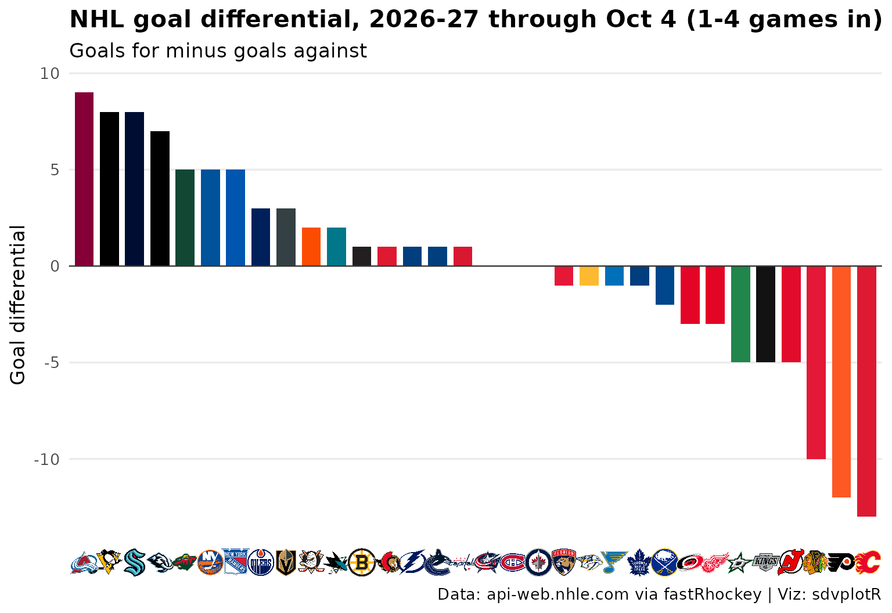

On this page
Updated 2026-10-06: the 2026-27 season, 1-4 games in per team. Early-season tables move a lot from week to week.
This page is rebuilt every week with the site. It builds the standings, charts goal differential with logos and ranks the points leaders with their headshots, for the latest NHL season with games: the season to date from October to April, the final regular season once it is over. Data: fastRhockey’s box-score releases and the NHL’s api-web.nhle.com standings.
Picking the season
NHL seasons are named by the year they end (2025-26 is
2026) and start in the fall, so until September the
calendar points at the season that ended in June. For a season with no
file yet fastRhockey::load_nhl_team_box() warns and returns
no rows, and a new season’s file holds only preseason games at first, so
the helper treats “no regular-season games” as “not published” and the
page steps back one season. A game id’s fifth and sixth digits are its
type: 02 is the regular season, 03 the playoffs. During the season the
standings come from api-web.nhle.com as of today; once the regular
season is over, as of its last day. That call goes through
live(): if the API does not answer, the page shows a note
in place of the standings and the goal-differential chart for that week
instead of failing the site build.
library(sdvplotR)
library(dplyr, warn.conflicts = FALSE)
library(ggplot2)
library(gt)
today <- Sys.Date()
day_label <- function(day, month = "%b") sub(" 0", " ", format(as.Date(day), paste(month, "%d"))) # "Oct 5"
# fastRhockey names a season by the year it ends (2025-26 is 2026); it starts in
# the fall, so until September the calendar points at the season that ended in June
current <- as.integer(format(today, "%Y")) + (format(today, "%m") >= "09")
label <- function(season) sprintf("%d-%02d", season - 1, season %% 100)
# an NHL game id's fifth and sixth digits are its type: 01 preseason, 02 regular season, 03 playoffs
game_type <- function(game_id) (as.numeric(game_id) %/% 10000) %% 100
# A season's team box scores, or NULL when it has no regular-season games yet:
# load_nhl_team_box() warns and returns no rows for a season it has no file for,
# and a new season's file holds only preseason games at first
team_games <- function(season) {
box <- tryCatch(suppressWarnings(fastRhockey::load_nhl_team_box(seasons = season)), error = function(e) NULL)
if (NROW(box) == 0 || !any(game_type(box$game_id) == 2)) NULL else box
}
season <- current
box <- team_games(season)
if (is.null(box)) {
season <- current - 1
box <- team_games(season)
}
stopifnot(!is.null(box))
box <- mutate(box, game_date = as.Date(game_date), type = game_type(game_id))
last_regular <- max(box$game_date[box$type == 2])
playoffs <- filter(box, type == 3)
in_season <- season == current && nrow(playoffs) == 0
# games per team from the release file (they differ early on)
games_in <- paste(unique(range(table(box$team_abbrev[box$type == 2]))), collapse = "-")
# A live API call, or NULL when the API does not answer: one bad week then shows
# a note in place of a table instead of failing the whole site build
live <- function(expr) tryCatch(expr, error = function(e) NULL)
unavailable <- function(what, ok) {
if (ok) "" else sprintf("*%s were unavailable when this page was built on %s; they return next week.*", what, today)
}
# api-web.nhle.com standings: as of today in season, as of the last regular-season day after it
standings <- live(fastRhockey::nhl_standings(date = if (in_season) NULL else format(last_regular)))
standings_ok <- NROW(standings) > 0
if (in_season) {
status <- sprintf(
"the %s season, %s games in per team. Early-season tables move a lot from week to week.",
label(season), games_in
)
through <- sprintf("through %s (%s games in)", day_label(last_regular), games_in)
} else if (season < current) {
status <- sprintf(
"the offseason, so this is the final %s regular season; the %s season has no regular-season games yet.",
label(season), label(current)
)
through <- "final regular season"
} else if (as.numeric(today - max(playoffs$game_date)) <= 10) {
status <- sprintf("the final %s regular season; the playoffs are under way.", label(season))
through <- "final regular season"
} else {
status <- sprintf("the offseason, so this is the final %s regular season.", label(season))
through <- "final regular season"
}1. Standings
Grouped by division in the NHL’s own order.
gt_sdv_logos() reads the NHL’s three-letter team codes
(LAK, NJD, TBL) through
sdvplotR’s aliases, so nothing is mapped by hand.
standings |>
arrange(division_name, division_sequence) |>
transmute(
division = division_name,
logo = team_abbr,
team = team_common_name,
gp = games_played, w = wins, l = losses, otl = ot_losses,
pts = points, pts_pct = point_pctg,
gf = goals_for, ga = goals_against, diff = goal_differential,
l10 = paste(l10_wins, l10_losses, l10_ot_losses, sep = "-"),
streak = paste0(streak_code, streak_count)
) |>
gt(groupname_col = "division", id = "nhl-standings") |>
tab_header(
title = paste("NHL standings,", label(season)),
subtitle = paste0(toupper(substr(through, 1, 1)), substring(through, 2))
) |>
fmt_number(pts_pct, decimals = 3) |>
fmt_number(diff, decimals = 0, force_sign = TRUE) |>
cols_label(
logo = "", team = "Team", gp = "GP", w = "W", l = "L", otl = "OTL", pts = "PTS",
pts_pct = "PTS%", gf = "GF", ga = "GA", diff = "DIFF", l10 = "Last 10", streak = "Streak"
) |>
tab_source_note("Data: api-web.nhle.com via fastRhockey | Viz: sdvplotR") |>
gt_sdv_logos(columns = logo, sport = "nhl", height = 24) |>
gt_theme_swiss()| NHL standings, 2026-27 | ||||||||||||
| Through Oct 4 (1-4 games in) | ||||||||||||
| Team | GP | W | L | OTL | PTS | PTS% | GF | GA | DIFF | Last 10 | Streak | |
|---|---|---|---|---|---|---|---|---|---|---|---|---|
| Atlantic | ||||||||||||
 |
Lightning | 3 | 2 | 1 | 0 | 4 | 0.667 | 8 | 7 | +1 | 2-1-0 | W2 |
 |
Bruins | 3 | 2 | 1 | 0 | 4 | 0.667 | 8 | 7 | +1 | 2-1-0 | L1 |
 |
Panthers | 3 | 1 | 0 | 2 | 4 | 0.667 | 6 | 7 | −1 | 1-0-2 | OT2 |
 |
Canadiens | 2 | 1 | 0 | 1 | 3 | 0.750 | 8 | 8 | 0 | 1-0-1 | OT1 |
 |
Senators | 1 | 1 | 0 | 0 | 2 | 1.000 | 3 | 2 | +1 | 1-0-0 | W1 |
 |
Sabres | 2 | 1 | 1 | 0 | 2 | 0.500 | 7 | 9 | −2 | 1-1-0 | W1 |
 |
Maple Leafs | 3 | 1 | 2 | 0 | 2 | 0.333 | 6 | 7 | −1 | 1-2-0 | L1 |
 |
Red Wings | 2 | 0 | 2 | 0 | 0 | 0.000 | 2 | 5 | −3 | 0-2-0 | L2 |
| Central | ||||||||||||
 |
Avalanche | 2 | 2 | 0 | 0 | 4 | 1.000 | 14 | 5 | +9 | 2-0-0 | W2 |
 |
Wild | 2 | 2 | 0 | 0 | 4 | 1.000 | 7 | 2 | +5 | 2-0-0 | W2 |
 |
Mammoth | 3 | 2 | 1 | 0 | 4 | 0.667 | 12 | 5 | +7 | 2-1-0 | L1 |
 |
Jets | 2 | 1 | 0 | 1 | 3 | 0.750 | 6 | 6 | 0 | 1-0-1 | W1 |
 |
Blues | 2 | 1 | 1 | 0 | 2 | 0.500 | 5 | 6 | −1 | 1-1-0 | L1 |
 |
Predators | 2 | 1 | 1 | 0 | 2 | 0.500 | 3 | 4 | −1 | 1-1-0 | W1 |
 |
Stars | 2 | 0 | 2 | 0 | 0 | 0.000 | 1 | 6 | −5 | 0-2-0 | L2 |
 |
Blackhawks | 3 | 0 | 3 | 0 | 0 | 0.000 | 5 | 15 | −10 | 0-3-0 | L3 |
| Metropolitan | ||||||||||||
 |
Rangers | 4 | 3 | 1 | 0 | 6 | 0.750 | 11 | 6 | +5 | 3-1-0 | W3 |
 |
Penguins | 2 | 2 | 0 | 0 | 4 | 1.000 | 13 | 5 | +8 | 2-0-0 | W2 |
 |
Hurricanes | 3 | 1 | 1 | 1 | 3 | 0.500 | 5 | 8 | −3 | 1-1-1 | W1 |
 |
Islanders | 2 | 1 | 1 | 0 | 2 | 0.500 | 7 | 2 | +5 | 1-1-0 | W1 |
 |
Capitals | 2 | 1 | 1 | 0 | 2 | 0.500 | 6 | 5 | +1 | 1-1-0 | L1 |
 |
Blue Jackets | 2 | 1 | 1 | 0 | 2 | 0.500 | 7 | 7 | 0 | 1-1-0 | L1 |
 |
Devils | 2 | 1 | 1 | 0 | 2 | 0.500 | 3 | 8 | −5 | 1-1-0 | L1 |
 |
Flyers | 4 | 0 | 2 | 2 | 2 | 0.250 | 5 | 17 | −12 | 0-2-2 | L1 |
| Pacific | ||||||||||||
 |
Oilers | 3 | 2 | 0 | 1 | 5 | 0.833 | 17 | 14 | +3 | 2-0-1 | W2 |
 |
Ducks | 2 | 2 | 0 | 0 | 4 | 1.000 | 7 | 5 | +2 | 2-0-0 | W2 |
 |
Sharks | 2 | 2 | 0 | 0 | 4 | 1.000 | 9 | 7 | +2 | 2-0-0 | W2 |
 |
Kraken | 3 | 2 | 1 | 0 | 4 | 0.667 | 13 | 5 | +8 | 2-1-0 | W1 |
 |
Golden Knights | 3 | 2 | 1 | 0 | 4 | 0.667 | 11 | 8 | +3 | 2-1-0 | W1 |
 |
Canucks | 4 | 2 | 2 | 0 | 4 | 0.500 | 19 | 18 | +1 | 2-2-0 | L1 |
 |
Kings | 2 | 0 | 1 | 1 | 1 | 0.250 | 8 | 13 | −5 | 0-1-1 | OT1 |
 |
Flames | 3 | 0 | 3 | 0 | 0 | 0.000 | 3 | 16 | −13 | 0-3-0 | L3 |
| Data: api-web.nhle.com via fastRhockey | Viz: sdvplotR | ||||||||||||
2. Goal differential
Goals for minus goals against, all 32 teams, in team colors;
scale_x_sdv() and theme_x_sdv() swap the team
codes on the x axis for logos.
gd <- standings |>
mutate(team = clean_team_abbrs(team_abbr, sport = "nhl")) |>
arrange(desc(goal_differential), team) # the team breaks a tie, so an unchanged week renders the same
ggplot(gd, aes(x = factor(team, levels = team), y = goal_differential, fill = team)) +
geom_col(width = 0.75) +
geom_hline(yintercept = 0, colour = "grey20", linewidth = 0.4) +
scale_fill_sdv(sport = "nhl", guide = "none") +
scale_x_sdv(sport = "nhl", size = 20) +
labs(
title = paste("NHL goal differential,", label(season), through),
subtitle = "Goals for minus goals against",
x = NULL, y = "Goal differential",
caption = "Data: api-web.nhle.com via fastRhockey | Viz: sdvplotR"
) +
theme_minimal(base_size = 13) +
theme(
plot.title = element_text(face = "bold"),
panel.grid.major.x = element_blank(),
panel.grid.minor = element_blank()
) +
theme_x_sdv()
3. Points leaders with headshots
Goals and assists from the regular-season skater box scores, stacked
into points. The box scores carry NHL API player ids, which
geom_sdv_headshots(id_type = "league") turns into the NHL’s
own headshots; the game rosters give the full names.
skaters <- fastRhockey::load_nhl_player_box(seasons = season) |>
filter(game_type(game_id) == 2)
full_names <- fastRhockey::load_nhl_game_rosters(seasons = season) |>
distinct(player_id, full_name) |>
filter(!duplicated(player_id))
stopifnot(identical(class(skaters$player_id), class(full_names$player_id)))
leaders <- skaters |>
arrange(game_date, game_id) |>
group_by(player_id) |>
summarise(
team = last(team_abbrev), gp = n(),
goals = sum(goals), assists = sum(assists), points = sum(points),
.groups = "drop"
) |>
arrange(desc(points), desc(goals), player_id) |>
slice_head(n = 10) |>
left_join(full_names, by = "player_id") |>
mutate(full_name = factor(full_name, levels = rev(full_name)))
top <- max(leaders$points)
bars <- tidyr::pivot_longer(leaders, c(goals, assists), names_to = "part", values_to = "n") |>
mutate(part = factor(part, levels = c("assists", "goals"), labels = c("Assists", "Goals")))
ggplot(leaders, aes(y = full_name)) +
geom_col(data = bars, aes(x = n, fill = part), width = 0.7) +
geom_sdv_headshots(
aes(x = -0.07 * top, player_id = player_id),
sport = "nhl", id_type = "league", height = 0.085
) +
geom_sdv_logos(aes(x = points + 0.06 * top, team = team), sport = "nhl", height = 0.06) +
geom_text(aes(x = points + 0.12 * top, label = points), hjust = 0, fontface = "bold", size = 3.8) +
scale_fill_manual(values = c(Goals = "#1f3b73", Assists = "#9fb4d8"), breaks = c("Goals", "Assists")) +
scale_x_continuous(limits = c(-0.14 * top, 1.22 * top), expand = c(0, 0)) +
labs(
title = paste("NHL points leaders,", label(season)),
# the box-score release can trail the live standings by a day or two
subtitle = paste0(
"Goals and assists, regular season",
if (in_season) paste(", games through", day_label(max(skaters$game_date))) else ""
),
x = "Points", y = NULL, fill = NULL,
caption = "Data: fastRhockey box scores | Viz: sdvplotR"
) +
theme_minimal(base_size = 13) +
theme(
plot.title = element_text(face = "bold"),
panel.grid.major.y = element_blank(),
panel.grid.minor = element_blank(),
legend.position = "top", legend.justification = "left"
)
Related
- NHL walks through fastRhockey and sdvplotR more broadly.
- MLB builds the same three views for baseball.
- Social graphics, automated posts leaderboards like these on a schedule.